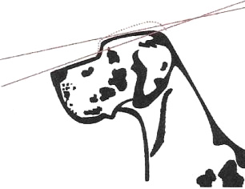
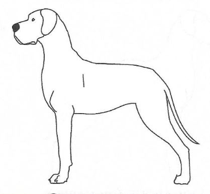
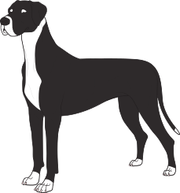

Выставочная собака
Экспертиза собаки
Квадрат
 |
 |
| Удлиненное тело |
 Удлиненное тело |
Голова
| Паралельность линий головы имеет важнейшее значение при оценке. Это то, что характеризует породу. Важно понимать, что является причиной непараллельности. До 18 месяцев голова растет, окончательно линии формируются после созревания. В профиль линии головы должны быть прямыми и параллельными. |
|
 |
|
 |
Схождение линий морды и черепа обычно сопровождается округлостью черепа |
 Расхождение линий морды и черепа вызывается опущенной мордой... |
 ...или "завалом" черепа. |
 Не следует путать опущенную морду с наличием линии экспрессии... |
 ...которая в отличие от мастифоидов не является складкой кожи. |
 |
Очень важную роль роль для головы имеет форма губ. Они должны быть квадратными и образовывать спереди как можно более прямой угол к линии морды. |
| Пример остроконечной головы с расходящимися линиями... |
...недостатком стопа и узкой мордой |
 Голова "яблоком" |
 |
 "Костяной" стоп |
 |
 Короткая морда |
|
 Недостаток стопа |
 |
| Голова сверху должна выглядеть прямоугольной ("коробка от обуви" или "кирпич"). Морда, длина которой должна быть равной длине черепа ожидается максимально широкой*. Продольные линии морды должны быть параллельны линиям черепа. *Это не отражено в явном виде в стандарте и является частным мнением автора статьи. Максимально широкая морда присуща представителям бойцовых пород. |
|
 Правильная голова |
 |
| Нос, переносица и морда слишком узкие |
 |
 Череп слишком широкий |
 |
| Излишне выраженные мышцы на щеках |
 |
Глаза
| Глаза расположены очень широко |
 Хорошо расположенные глаза |
Глаза расположены очень узко |
| Правильные миндалевидные глаза |
 Круглые глаза |
| Глаза правильной формы расположены широко |
Отвислые веки. Видна коньюктива |
| Энтропион. Заворот века |
 Эктропион. Выворот века |
Уши
 Уши хорошего размера и расположения |
Уши посажены высоко |
Уши посажены низко |
| Уши маленькие |
 Уши большие |
Уши смещены назад |
 Уши посажены высоко |
 Уши посажены высоко |
Уши посажены низко |
 Уши посажены низко, очень большие, завернуты |
 Уши смещены назад, очень маленькие |
Уши завернуты |
Шея
| Шея вместе с головой придают догу то, что называется аристократичностью, или благородством. Важнейшие характеристики шеи - ее длина, изгиб и наклон. Все три характеристики имеют значение, если отсутствует "подвес" - излишек кожи под головой на шее. |
| Правильно поставленная шея |
 Вертикально поставленная шея |
Подвес |
| Короткая шея |
Шея без изгиба |
 Грубая, тяжелая шея |
| Правильная шея |
 Короткая, тяжелая шея |
| Прямая, грубая шея |
 Отвислая кожа на шее (подвес) |
Корпус
 Хорошо сложенное тело |
"Голубиная" грудь |
 Опущенная грудь |
 Мелкая грудь |
 Узкая плоская грудная клетка |
 Правильная грудная клетка |
Бочкообразная грудная клетка |
 Нижняя линия корпуса поднята |
Нижняя линия корпуса опущена |
 Прямая грудь |
 Невыраженная холка |
| Горбатая спина |
 Прогнутая спина |
 Правильное тело |
 Поднятый зад |
 Прямой зад |
 Опущенный зад |
 Короткая поясница |
Удлиненная спина |
 Невыраженная передняя часть груди |
Недостаток передней и нижней части груди |
 Горбатая спина |
 Поднятый зад |
Подборка рисунков Jill Evans. Опубликовано Laura Munro.
***
Пропорции и баланс немецкого дога
Фрагменты, заключенные в двойные кавычки, взяты из стандарта породы Great Dane, принятого 28 апреля 1999 года, ранее доступного на сайте AKC (American Kennel Club). Изменения стандарта, принятые в 2010 и 2018 годах, не касались баланса или пропорций.
При первом взгляде на породистую собаку обычно рассматривают отдельные ее части: голову, окрас, переднюю и заднюю часть, хвост. По мере более внимательного изучения происходит переход к восприятию собаки в целом. "Собака в целом" не означает, что отдельные, типичные черты породы менее важны. Это значит, что типаж породы определяется всей собакой так же, как отдельными чертами.
Сбалансированная, цельная собака не просто имеет правильные отдельные части. Эти части находятся в правильном соотношении друг с другом. Стандарт описывает дога так: "...общее строение должно быть сбалансированным...." и "...это всегда единое целое - Аполлон среди собак".
Словарь определяет баланс как "гармоничное или правильное соотношение". При оценке судьи видят собак в целом и выделяют сначала тех из них, кто правильно сбалансирован, и потом будут рассматривать какие-либо детали. Если общая форма и баланс собаки неправильные, эта собака, скорее всего, не будет оцениваться.
Пропорция определяется как соотношение между предметами (или частями предметов) в отношении их сравниваемого количества, величины или соотношения.
 |
На фото собака. |
 |
Вот другая собака. Здесь она представляет единое целое, сбалансированное и естественное. |
Баланс
Однако, чтобы увидеть баланс нужно не только смотреть на картинку. Существуют точные пропорции, на которые следует обратить внимание. Некоторые из них взяты из стандарта породы, другие будут вытекать из стандарта.
Первая фраза стандарта гласит: "Немецкий дог сочетает в своем царственном облике достоинство, силу и элегантность с большим размером и мощным, хорошо сформированным мускулистым телом". Сила, мощь и мускулистое тело - это слова, обозначающие сильную, основательную собаку. Основа баланса для дога - это равное количество большого размера, элегантности и большой силы. Равное сочетание этих трех качеств - часть того, что отличает дога от других пород.
Размер у дога - это его рост. Стандарт устанавливает минимальную высоту 30 дюймов (около 75см) для кобелей и 28 дюймов (70см) для сук (а желательно больше). Эти минимальные значения относятся к шестимесячным щенкам, когда они впервые выходят на ринг. В иллюстрированном стандарте [Американского клуба породы] говорится, что средний рост взрослых особей составляет 34 дюйма (85см) для кобелей и 32 дюйма (80 см) для сук. Там также говорится, что при прочих равных условиях более крупные доги предпочтительнее. Большой рост - это достоинство, хотя, конечно, не единственное. Если это хороший, сбалансированный дог, он не может быть слишком высоким. Многие характеристики придают этим собакам элегантность. Длина головы, шеи, ног имеют большое значение для элегантности. Углы и изгибы, "гладкое мускулистое тело" также вносят свой вклад, равно как и "подчеркнутая подтянутость". Многие определения элегантности включают грациозность, которая происходит из плавных непрерывных чистых линий и изгибов.
Основательность, сила и мощь проявляются в хорошей мускулатуре и костях. Глубина и ширина являются характеристиками корпуса и грудной клетки. Кобель "массивнее" чем сука, но оба крупные. Массивность должна быть уравновешена элегантностью.
Квадрат
В стандарте говорится, что пропорция роста к длине туловища у догов - 1:1, это квадрат, при этом у сук допускается немного более длинное тело. В стандарте сказано, что рост измеряется "по плечу". Но оно скрыто, поэтому рост измеряется от холки над высшей точкой плеча до земли. Длина - от точки плеча (сустава между плечом и верхней частью передней ноги - предплечьем) до седалищной кости.
Поскольку доги высокие, и холка у них высоко, выше спины, оптическая иллюзия может повлиять на то, что видит судья. Глаза притягиваются к линии спины, самой длинной горизонтальной линии, как к верхней линии квадрата. На самом деле, вершина квадрата может быть на пару или более дюймов выше спины. В результате линии собаки, которая выглядит квадратной, могут быть вертикальным прямоугольником, более высоким, нежели длинным. Дог, который на самом деле имеет квадратные размеры, будет выглядеть не совсем квадратным, немного длиннее, чем оптический квадрат. Однако не стоит любой ценой искать четкий квадрат. Важны и основательность и элегантность. В стандарте говорится, что "грубость или недостаток мощи одинаково нежелательны".
Рост и углы дога могут меняться в течение его жизни. Он невысокий и очень угловатый в щенячьем возрасте. В подростковом возрасте, после скачка роста, он становится пропорциональнее и сглаженнее.
Кобели и суки
В стандарте говорится: "Кобель должен выглядеть более массивным, чем сука, с более крупным корпусом и более тяжелым костяком". Чтобы определить пол, не нужно смотреть на вторичные половые признаки. У кобелей больше костяка, более глубокое и широкое тело, более глубокая и широкая голова, а также более высокий рост. Следует обратить внимание, что здесь не говорится, что суки меньше, а кобели - больше. Если сука высокая и плотная с соответствующей элегантностью, а кобель меньше, то это, скорее, в негативе для кобеля, чем к достоинству суки.
В стандарте говорится, что "мужественность кобеля очень ярко выражена в структурном оформлении головы. Голова суки более деликатно сложена".
 |
На фото слева голова суки, справа - кобеля. Относительные пропорции у обоих
примерно одинаковы. |
Голова
Стандарт четко описывает пропорции головы, как специфичные, так и производные. Она "прямоугольная, длинная", ее плоскости "прямые и параллельные" и "угловатые со всех сторон". Длина морды равна длине черепа до затылочного бугра.
Голова описана как прямоугольная. Ппрямоугольники должны иметь длину вдвое больше ширины (или высоты) и быть одинаковы по высоте на обоих концах. Поэтому прямоугольная голова должна иметь одинаковую глубину черепа, равно как и глубину морды.
Длина морды равна длине верхней части черепа, а глубина черепа и морды не меняется. Таким образом, когда голова хорошего дога в профиль разделена по вертикали на стопе, ни череп, ни морда не должны казаться больше друг друга. У большинства догов в Европе морда слишком короткая и мелкая по сравнению с черепом, что делает голову несбалансированной.
Прямоугольник должен быть виден и спереди. Это подтверждается тем, что череп имеет "параллельные стороны", "переносица должна быть как можно шире" и "уши должны быть высоко поставлены".
Стандарт характеризует стоп как "явно выраженный при виде сбоку". Выраженный стоп - это результат работы бровей, а не высокому подъему глаз. Как часть маскулинности кобеля, стоп кобеля более выраженный, более высокий, чем у суки. Высота стопа в породе должна быть правильной, чтобы голова была правильной. Правильная высота стопа у дога в профиль составляет около двадцати процентов от высоты (глубины) черепа. Верхняя часть морды примерно на двадцать процентов ниже, чем верхняя линия черепа. Для баланса низ морды с губой опускается примерно на те же двадцать процентов ниже челюсти черепа, чтобы сохранить прямоугольную форму.
 |
Голова суки на фото прямоугольная - глубина черепа и глубина морды одинаковы. Она длинная, и длина морды равна длине черепа. Важно отметить, что уши находятся на голове, поэтому при сравнении длины морды и черепа затылок находится за ушами. |
Шея
Шея у дога длинная. У сбалансированной собаки шея примерно такой же длины, как и голова. Ширина шеи посредине примерно равна глубине черепа. Шея должна "плавно перетекать в холку" и наоборот. Правильная шея вносит значительный вклад в элегантность. Собака с хорошей шеей выглядит хорошо.
 |
Короткая шея отнимает элегантность и делает ее грубой и неуравновешенной. |
 |
У суки на фото - хорошая шея . С длинной шеей, плавно переходящей в холку и далее в спину, собака обладает элегантностью. Шея почти правильной длины. Голова могла бы быть длиннее и больше в целом, с более длинной и глубокой мордой. Это улучшило бы ее баланс. |
На фото красивая сука со сбалансированной головой и шеей. Можно обратить внимание на плавный
переход от шеи к холке и спине и плавность линий в целом. Капля воды,
помещенная на затылок, непрерывно стекает по верхней линии контура к крупу и далее по хвосту. |
 |
На фото красивая сука с балансированной головой и шеей. |
Передние ноги
В стандарте много уделяется внимания передним конечностям. "Лопатка ... образует, насколько это возможно, прямой угол ... с плечом". Угол, под которым "возвращается" плечо, должен быть равен углу отведения плеча. Концепция плеча под прямым углом родилась благодаря Рейчел Пейдж Эллиот и ее книге "Оригинальные шаги собаки". Годы спустя доктор Квентин ЛаХэм оспорил эту степень угловатости на собаках с нормально пропорциональной длиной ног, и убедил мисс Эллиот, что угол должен быть несколько более открытым, чем девяносто градусов. Действующий на время публикации [2011] стандарт FCI определяет угол в 100 градусов.
"Линия от верхнего окончания лопатки до задней части локтевого сустава должна быть перпендикулярна" (земле). "Лопатка и плечо должны быть одинаковой длины". Находится верхняя часть лопатки. Отвес, опущенный из этой точки вертикально на землю, должен попасть на заднюю часть локтя, а также на подушечку стопы. Когда собака на ринге издает стонущие звуки во время движения или в стойке, это следствие неправильных действий хэндлера, ее передняя часть при этом выглядит несбалансированной.
Угол наклона лопатки и плеча должен направлять переднюю ногу под центр тяжести собаки для наилучшей поддержки. Передние ноги не должны опускаться под шеей собаки, что происходит при плохих углах или "передней постановке". Когда передние ноги находятся под шеей, корпус не имеет достаточной опоры, и верхняя линия контура корпуса не будет строгой и ровной.
Следует обращать внимание на термин "передняя четверть". По сути, он означает, что передняя часть собаки, от линии плеч до локтей и вперед, составляет четверть длины собаки. Задние конечности - задняя часть - это еще одна четверть. А между ними - половина длины собаки в профиль. Правильный баланс подразумевает эти пропорции.
Стандарт говорит: "Высота до локтя должна составлять половину расстояния от холки до земли". Есть мнение большинства породников, которое считает, что локоть до земли должен быть чуть больше половины, может быть, на дюйм или около того, в зависимости от роста собаки. Элегантность вытекает из длины, в том числе длины ног. До 1990 года стандарт GDCA не требовал пропорции 50 на 50; стандарт FCI не требует этого и сегодня.
На фото - хорошо отведенное назад плечо и хороший выход верхней части ноги. Плечо выглядит одинаковой длины с размером лопатки. Локоть находится под окончанием лопатки, а линия, проведенная от этих точек, попадает на подушечку стопы. Локоть находится на середине высоты до холки. Немного большая длина ноги придала бы собаке больше элегантности, а также сделала бы ее пропорцию ближе к квадрату. |
|
 |
На фото плечо отведено назад, а верхняя часть ноги выходит примерно под тем же углом, так что локоть находится под верхним окончанием плеча. Передние ноги находятся под корпусом, а не под шеей. Передние ноги немного длиннее глубины корпуса. |
 |
На фото передняя четверть собаки хорошо сбалансирована с корпусом. Локоть под точкой плеча. Правую переднюю ногу не видно, так как она скрыта под собакой за передней частью груди. |
 |
На фото плечо отодвинуто назад, но лопатка не ввыходит под нужным углом. Отсутствие выхода приводит к тому, что передние ноги оказываются под шеей и поэтому не обеспечивают поддержку самой тяжелой части собаки. Это влияет на нижнюю линию контура - она намного длиннее от локтя до задних конечностей по сравнению с собаками на фото выше. |
 |
Баланс в передней четверти включает в себя длину и расположение плеча и предплечья, а также длину передней лапы. Передняя часть корпуса своей формой и расположением вносит вклад в баланс всей собаки. Большая грудь, выставленная вперед у собаки, также негативно влияет на баланс и внешний вид. |
Корпус
Часть корпуса между передними и задними конечностями составляет примерно половину длины собаки. Стандарт требует "короткой ровной спины", "широкой поясницы", "широкой, глубокой груди". "Грудь с хорошо выраженными ребрами опускается до локтя". "Нижняя линия контура корпуса...выделяет... подтянутый живот".
Широкая поясница, широкая глубокая грудь, опускающаяся до локтя и выраженная грудная клетка способствуют мощи. Хорошо выраженная подтянутость живота является частью элегантности.
 |
На фото - короткая ровная спина, широкая глубокая грудь, грудь до локтя
обеспечивают почти квадратный профиль.
|
На фото средняя часть тела, между передними и задними четвертями, составляет половину длины собаки. Посмотрите на разницу в длине всего тела собаки по сравнению с длиной нижней линии контура от локтя до бедра. |
Голова и шея собаки на фото сбалансированы. Плечо отведено назад, хотя верхняя часть лапы могла бы выходить больше. Насколько сильно длина тела нарушает баланс? Длина определяется грудной клеткой, а не поясницей. |
Влияние контура на баланс
Грубый контур. Мощь без элегантности. Спрямленные линии. | |
 |
Утонченный контур. Элегантность без элегантности. Крайняя степень подтянутости. |
Сочетание мощи и элегантности. Хорошо выраженный контур. |
Задняя четверть
Задняя четверть - часть собаки находящаяся между началом крупа и до конца седалища. Линейный размер передней и задней части собаки примерно равны у сбалансированного дога. Круп "широкий" - со стороны и сзади и "чуть наклонный". Широкий круп обеспечивает широкую и мускулистую верхнюю часть бедра. Верхняя часть бедра и нижняя (вторая) часть бедра имеют одинаковую длину. Зад должен быть хорошо сбалансирован, соответствовать передней части. Бедра относительно короткие ("хорошо опущенные").
У тигровой суки длина крупа не гармонирует с шириной верхней части бедра. Более широкое и мускулистое бедро выглядело бы лучше. Верхняя часть бедра имеет ту же длину, что и нижняя. Нижняя часть бедра имеет хорошую ширину. |
|
 |
У тигрового кобеля хорошие углы передних и задних конечностей. Бедра относительно короткие. |
 |
У палевой собаки широкий круп обеспечивает сильную мускулатуру бедер сзади. |
Баланс при движении
Общий вид и баланс собаки должны сохраняться во время движения. При описании движения рысью стандарт предусматривает следующее:
"Длинные, легкие шаги", "голова вынесена вперед". "Верхняя линия контура... ровная и параллельная земле". Передние ноги "опускаются на землю по линии носа", "Движения задних ног... соответствуют движению передних".
 |
Шея наклонена под углом примерно 45 градусов. Передняя нога опускается на землю на линии носа. Выброс передних и задних ног примерно одинаков. Обе ноги не поднимаются высоко от земли. Задняя нога приземляется на место, только что освобожденное передней ногой. Спина ровная, без наклона вверх или вниз. Передняя лапа и бедро тянутся. |
Линия задней ноги почти прямая - собака движется как единое целое. Хорошая синхронизация ног. Передние и задние ноги вытянуты. Хотя это движение лучше, чем большинство других, следует обратить внимание, что передняя нога вытянута больше, чем задняя, и выше, чем передняя нога на фото выше. Вытяжение передней ноги на первом фото в большей степени включает плечо и является более эффективным движением. |
|
Спина ровная, голова и шея вытянуты. Выброс и отступ эквивалентны. Синхронность постановки ног правильная. Нога и лапа вытянуты. Движение как единое целое. |
|
 |
Симметрия передних и задних ног, разгибание и сгибание локтевого, коленного и тазобедренного суставов. Верхняя линия контура остается ровной. |
 |
На фото вытянутость передних ног не соответствует задним. Линия спины "бежит вниз по склону". Передняя нога не опускается под носом. |
Сравнение со стандартами других пород
Стандарты других пород также описывают пропорции, которые могут быть интересны при рассмотрении пропорций догов.
Стандарт самоеда говорит, что длина скакательного сустава составляет "приблизительно 30 процентов от высоты бедра". Стандарт догов требует "хорошо опущенного" - короткого - скакательного сустава. Треть от высоты бедра дает как раз такую пропорцию.
 |
 |
Стандарт большого шнауцера описывает породу как "почти квадратную". Далее написано: "Общая длина головы составляет примерно половину длины спины (от холки до основания хвоста)".
Применимость этой пропорции и к догу зависит от того, как измерять - от начала или от конца холки.
 |
Стандарт ротвейлера требует, чтобы локоть находился на половине роста собаки. Для ротвейлера и палевого дога расстояние от локтя до земли составляет половину роста собаки в холке. Длина ноги тигровой суки от локтя до земли - на один дюйм больше, чем половина ее роста. Длинные ноги - это часть того, что делает дога элегантной породой.
 |
|
 |
В стандарте дога сказано, что голова "длинная", но не сказано, насколько длинная. В стандарте бладхаунда указано, какой длины у них голова: 12 дюймов для кобелей, 11 дюймов для сук. Доги крупнее, чем бладхаунд; разумно ожидать, что голова дога будет длиннее...
 |
Оценивайте собаку в целом
|
Некоторые вещи, на которые следует обратить особенное внимание, являются частью баланса:
1. Общий размер, мощь и элегантность |
На собаку важно смотреть целиком, особенно на на контур, чтобы увидеть пропорции и баланс. Собака в движении - это реальная собака, а не презентация. |
|
Что оценить у каждого представителя породы на фото в разрезе сбалансированности:
- Размер, мощь, элегантность |
Правильно ли собраны части собаки? |
Идеального дога не существует, поэтому вы вряд ли найдете дога с идеальным балансом. Есть несколько способов решить, какие недостатки баланса являются более серьезными.
Руководства предписывают снижать оценку за недостатки в зависимости от степени их отклонения от стандарта. Это может быть применимо и к балансу. Небольшие отклонения в балансе менее серьезны, чем большие.
Существует мнение, что может быть оценка баланса, которая уникально определяет породу. Из первой фразы стандарта: "Дог сочетает в себе ... силу и элегантность с большим размером..." баланс между ними имеет приоритет. Головы в каждой породе уникальны, поэтому голова дога тоже должна считаться важной, не только сама по себе, но и сбалансированной внутри и по отношению к остальным частям собаки. Надо добавить к оценке баланса шею, так как считается, что длинная шея важна для элегантности
Когда оценивают дога, включают в эту оценку баланс собаки в целом. Если не отбирать собак по этому показателю, его в породе не будет.
Опубликовано Никки Риггсби 01.01.2011
***
Движение
Из стандарта породы немецкий дог: "...должен двигаться с большим захватом пространства, слегка пружинясь".
"Походка с длинными, легкими шагами демонстрирует силу и мощь, не приводит к подбрасыванию тела, перекатыванию или колебанию линии спины или всего корпуса. Верхняя линия контура тела должна выглядеть ровной и параллельной земле. Вынос передней ноги должен быть точно ниже носа, в то время как голова при этом должна смотреть вперед. Мощный зад должен быть сбалансирован с тянущей силой. С увеличением скорости возникает естественная тенденция к тому, чтобы ноги сходились к центральной линии равновесия под корпусом. Не должно быть скручивания в локтевом или тазобедренном суставах".
В стандарте много слов уделено описанию походки сбоку, или, по крайней мере, характеристикам, которые можно увидеть, рассматривая движущуюся собаку в профиль. Некоторое время назад судьи и заводчики за океаном провели опрос о важности компонентов движения для выставочных собак. Те, кто занимается более тридцати семи лет разведением догов и десять лет судят их на ринге, оценили компоненты движения по степени важности:
Эксперты по догам также ранжировали список недостатков движений, от наиболее серьезных до наименее серьезных:
Может ли хендлер повлиять на движения дога или улучшить их? Если да, то что хендлер может сделать и каков будет результат? Значительное большинство опрошенных считает, что хендлер действительно может повлиять на движение дога, чаще негативно. В качестве неправильного поведения называлось слишком быстрое или слишком медленное для собаки движение. Некоторые считают, что это обычно делается для того, чтобы скрыть недостатки движения собаки. Жесткий поводок или натягивание ринговки также могут привести к ошибкам в движениях.
Еще до выставки заводчики и судьи рекомендуют провести подготовку собаки. Тренированная собака будет двигаться с большей энергией. Занятия позволят собаке двигаться на свободном поводке, по прямой линии и на хорошей для собаки скорости - все это позволит собаке выглядеть значительно лучше.
Опрошенные также упоминали, что некоторые доги могут быть слишком крупными для конкретного хендлера. Кроме того, если хендлер не может или не хочет двигаться с хорошей для собаки скоростью, собака не будет выглядеть так хорошо, как могла бы.
Чем больше вперед и вниз вынесена голова собаки (вплоть до уровня спины), тем ниже выглядит передняя часть собаки. Если держать шею и голову дога под углом сорок пять градусов, то линия верха будет лучше, чем при более низком положении головы.
В стандарте сказано "квадратный" формат, хотя раньше говорили "как можно более квадратный". Стандарт требует хорошо сбалансированных передних и задних конечностей. Собака должна быть очень хорошо сбалансирована и двигаться с правильной скоростью, чтобы двигаться правильно, если она квадратная и с хорошими углами. Насколько сильно выставочная кондиция может повлиять на движения дога? Какая подготовка может улучшить движения дога и как? Все согласились с тем, что хорошо тренированная собака будет двигаться лучше, чем та же собака без подготовки. Хорошая мускулатура обеспечивает большую энергию и более легкие движения.
Большинство считает, что характерная "картинка" породы и баланс более важны, чем движения. Некоторые считают, что породный типаж и движения одинаково важны. Другие считали, что движения являются компонентом типажа породы. Все считают, что правильные движения для догов очень важны. Многие участники опроса считают, что слишком много догов двигаются не так хорошо, как должны. В качестве основных недостатков упоминались вялость и слабая управляемость, а также боковое мотание. Некоторые эксперты считали, что наблюдение за движением дога показывает реальную собаку лучше, менее маскированной влиянием хэндлера.
Опубликовано Никки Риггсби
***
Great Dane. Westminster AKC show.
***
Окрас
[Информация по окрасу догов, визуализированная, с цитатами из Стандарта породы (на момент 2015г.) заимствована из работы Kate Ice
Доги бывают шести [с 1 января 2019 года - семи] стандартных окрасов. Любой окрас, отличный от стандартного, считается нестандартным. Некоторые, но не все, нестандартные окрасы являются результатом нежелательного скрещивания определенных семейств окрасов. Для определения того, какой окрас несет собака, можно провести генетическое тестирование окраса, которое следует проводить, если есть сомнения в том, гены какого окраса (окрасов) несет собака.
окрас желательный |
окрас нежелательный |
окрас нестандартный |
Палевый окрас должен быть желто-золотым с черной маской. Черный цвет должен быть на ободках глаз и бровях, а также может быть на ушах и кончике хвоста. Предпочтение всегда должно отдаваться насыщенному золотому желтому. Нежелательны белые отметины на груди и пальцах ног, а также грязный окрас. Палевые относятся к семейству палево-тигрового окраса и должны разводиться только с палевыми и тигровыми. |
| Формула цвета kk/--/mm/S-/D- |
 |
 |
 |
 |
Основной окрас тигрового должен быть желто-золотистым и обязательно с яркими черными поперечными полосами в виде шеврона. Предпочтительна черная маска. Черный цвет должен быть на ободках глаз и бровях, а также может быть на ушах и кончике хвоста. Чем интенсивнее основной окрас и чем отчетливее и равномернее полосчатость, тем более предпочтительным будет окрас. Слишком яркая или слишком слабая полосчатость одинаково нежелательны. Нежелательны белые отметины на груди и пальцах ног, черно-подпалые и грязные окрасы. Тигровые относятся к семейству палевого-тигрового окрасов и должны разводиться только с палевыми и тигровыми. |
| Формула цвета kbrk/--/mm/S-/D- |
 |
 |
 |
 |
Окрас черного дога должен быть глянцево-черным. Белые отметины на груди и пальцах ног нежелательны. Семейство черного окраса имеет три подгруппы: Черные из разведения черных, черные из разведения голубых и черные из разведения арлекинов. Черных из-под черных можно разводить с любой из подгрупп черных, с голубыми и с арлекинами. Черные, несущие ген голубого окраса, не должны разводиться с представителями семейства арлекинов. Черных, несущих нег арлекина, не следует разводить с голубыми. |
| Формула цвета K-/--/mm/S-/D- |
 |
 |
Основной окрас мраморного дога должен быть чисто белым с черными рваными пятнами, неравномерно и хорошо распределенными по всему телу; предпочтительна чисто белая шея. Мерлевые пятна - норма. Ни одно пятно не должно быть настолько большим, чтобы казаться одеялом. Семейство окрасов арлекинов генетически сложное. Стандартные и нестандартные окрасы семейства арлекинов включают мантии, белые, мерле, пиболды, черные со слишком большим количеством белого и другие вариации. Представителей семейства арлекинов не следует разводить с представителями семейств палево-тигровых, голубых или голубых из-под черных окрасов. |
| Формула цвета K-/Hh/M-/--/D- |
 |
 |
 |
 |
 |
Голубой окрас должен быть чистого стального голубого цвета. Белые отметины на груди и пальцах ног нежелательны. Голубой окрас является разбавленным, и его можно разводить с голубым, черным из-под черных или голубым из-под черных. Голубой не следует разводить с представителями семейства палево-тигровых или арлекинов. |
| Формула цвета К-/--/mm/S-/dd |
 |
 |
 |
Окрас плащевого дога должен быть черно-белым со сплошным черным покрывалом, простирающимся по телу; черный череп с белой мордой; белый подпал необязателен; предпочтителен полностью белый воротник; белая грудь; белые частично или полностью передние и задние ноги; черный хвост с белой окантовкой. Допускается небольшая белая отметина на черном покрывале, а также разрыв в белом ошейнике. Плащевой относится к семейству окрасов Арлекин и должен разводиться с теми же ограничениями, как и Арлекин. |
| Формула цвета К-/hh/mm/sisi/D- |
 |
 |
 |  |
***
Породный тип*
"Породный тип" (типаж) подразумевает совокупность признаков, характерных для определенной породы животного. Каждой [классифицированной или зарегистрированной] породе присущ единственный и неповторимый правильный тип. Единственный [известный на сегодня] путь, который может привести заводчика к желаемому результату - получению идеальной собаки правильного типа - это кропотливый и долгий отбор, а также подбор племенных пар. Так были получены все лучшие породные линии. В настоящее временя [в Европе в первую очередь] доги представлены настолько разнотипным поголовьем, что это кажется странным и грустным одновременно. Существует тест, который интересно предложить заводчикам. Необходимо в пятидесяти словах (в Стандарте - около 1350 слов) изложить, что они считают самым главным, то есть типичным для породы, которую они разводят. Можно очень удивиться увидев, как мало найдется знатоков, способных вразумительно сказать, что же действительно характеризует породу, с которой они же сами и работают. Как правило, приводится общее расплывчатое описание данной породы.
Для каждой породы существуют свои правильные пропорции, независимо от того, говорится о них в действующем стандарте или нет. Эти пропорции определяют желательный внешний вид породы. Заводчик и судья, прежде чем приступить к разведению собак или к экспертизе на выставке, должны очень хорошо разбираться в том, как эти пропорции связаны между собой. Это - основа основ работы заводчика, который, как и строитель, прежде чем забить первый гвоздь, решает, каких размеров и форм должны быть отдельные части будущей конструкции и каким образом они будут соединяться в единое целое. Заводчик и судья, кроме того, должны хорошо знать историю породы. Эти знания помогут разрешить множество вопросов, на которые стандарт не дает ответа. Только овладев этими знаниями, заводчик может начать подбор родоначальников своего разведения. Самые известные заводчики пришли к успеху не случайно. Это далось им ценой кропотливого труда, знаний и умения объективно оценивать результаты своей работы.
В своей работе "Непослушные собаки", опубликованной в 1933 году, Г.Бабкок пишет: "Несомненно, что существует много знающих и ответственных заводчиков, приносящих пользу породе. Но есть и другие, которые рассматривают собаку исключительно как объект коммерции. Меркантильный дух наносит большой вред тому, что мы называем типом собаки...". Это верно и актуально и в наши дни. Потеряв тип, ротвейлер превратится в тяжелого добермана, афган - в мохнатую салюки, дог - в эклектичную смесь мастифа и грейхаунда. Типаж - решающий элемент для породы, который позволяет ее отличать от других. Эксперты, говоря о типе, часто избегают давать ему определение, подчеркивая тот факт, что речь идет о качествах, не поддающихся измерению, и что до конца разобраться в этом под силу только "настоящим кинологам". Если представлять тип таким образом, то можно подумать, что о нем может судить только узкий круг посвященных, а для понимания остальных он остается недоступным. Напрашивается вывод, что "эксперты" попросту уклоняются от того, чтобы дать однозначное определение типу, вместо этого рассуждая о множестве типов внутри породы.
В стремлении получить все более "совершенных" животных возрастает риск появления гротескных особей с переразвитым типом. Фил Дрэббл писал: "Ученые заводчики зачастую добиваются вычурных внешних форм за счет потери таких качеств, как выносливость, смелость и сообразительность. Большинство выставочных собак представляют собой жалкую карикатуру на тех собак, от которых они произошли и которые сделали эту породу известной". Таким образом, некоторые современные породы собак представляют собой не что иное, как карикатуры на животных, которые были их предками. В оригиналах стандартов редко обращается внимание на те черты, которые превращаются в манию у заводчиков и судей во имя победы на ринге. Смесь болезненных устремлений, театральности, незнания и недобросовестности настолько вредит породе, что может даже уничтожить смысл ее существования вообще. При этом проявляются и такие отрицательные моменты, как наследственные заболевания, контролировать которые становится все сложнее и сложнее. Такие проблемы ничуть не смущают отдельных владельцев собак, которые не озадачивают себя улучшением породы в целом, а стремятся, прежде всего, неважно какой ценой, победить на выставке и продать подороже как можно больше щенков.
Защита типа - это основа разведения, его сохранение - совместное дело клубов пород, заводчиков, судей, национальных кинологических организаций. У каждого судьи складывается свое представление о том, какой должна быть идеальная собака данной породы. Породный клуб должен располагать не только детальным описанием собаки, но и фотографиями и рисунками с изображением животных желательного типа, приближающихся к идеалу породы. Тогда у судьи отпадет необходимость создавать мысленный образ, потому что в его распоряжении будут конкретные материалы. Грамотный судья может сделать очень многое для сохранения типа в породе.
С. Дж. Дэвис писал: "При разведении с учетом типа решающим может быть одно: отбор. Все остальное - второстепенное". Отбор часто начинается во время экспертизы на ринге, когда судья дает собаке оценку. Посмотрите на свою собаку и сравните ее с собаками, от которых произошла эта порода, благодаря которым установился ее определенный тип. Затем задайте себе вопрос: вам необходима победа в угоду текущей моде или вы хотите, чтобы самые ценные качества этой породы сохранились и в будущих ее поколениях? От заводчиков в этом случае требуется сила воли и желание, от судей - честность и глубокие знания.
*Массимо Сончини (перевод с французского Ольги Мищихи, журнал "Друг")
Одна из попыток создания графического представления породного типа принадлежит перу Линды и Михаэлю ДеВинсент-Эсли. Чтобы оценить соответствие породныым требованиям авторы предлашают найти 6 красных точек на картинке, которые соответствуют верхней точке холки, плечу, нижней точки грудной клетки, ягодице, коленке, и средней части нижней части бедра. Затем следует соединить каждую тройку точек как показано на рисунке. По степени отклонения нарисованных линий, соединяющих точки на картинке вашей собаки авторы предлагают сделать вывод о степени отклонения от представлений о породе.
В условиях, когда стандарт не имеет количественных метрик и один судья может сделать собаку чемпионом, а другой при этом не дать даже хорошей оценки, остается только приветствовать создание иллюстрированных стандартов, как это сделал АКС. Тем более, что прообразом для идеального дога по мнению Д.Готье стал Ch. Honey Hollow Stormi Rudio.
Американский породный клуб GDCA в 2021 выпустил электронную брошюру, дающую представление о породе, кратко - о ее истории. В брошюре на 94 страницах представлено множество фотографий современных догов. Также приводятся два рисунка, отражающие современный взгляд на отдельные пропорции породы.
На сегодняшний день визуализированные пропорции дога наиболее полно отражены в Руководстве для судей, опубликованном Немецким клубом породы в 2017 году. На 68 страницах Руководства представлено множество рисунков для желательных, допустимых и дисквалифицирующих характеристик стандарта породы. Много внимания уделено цвету и рисунку.


***